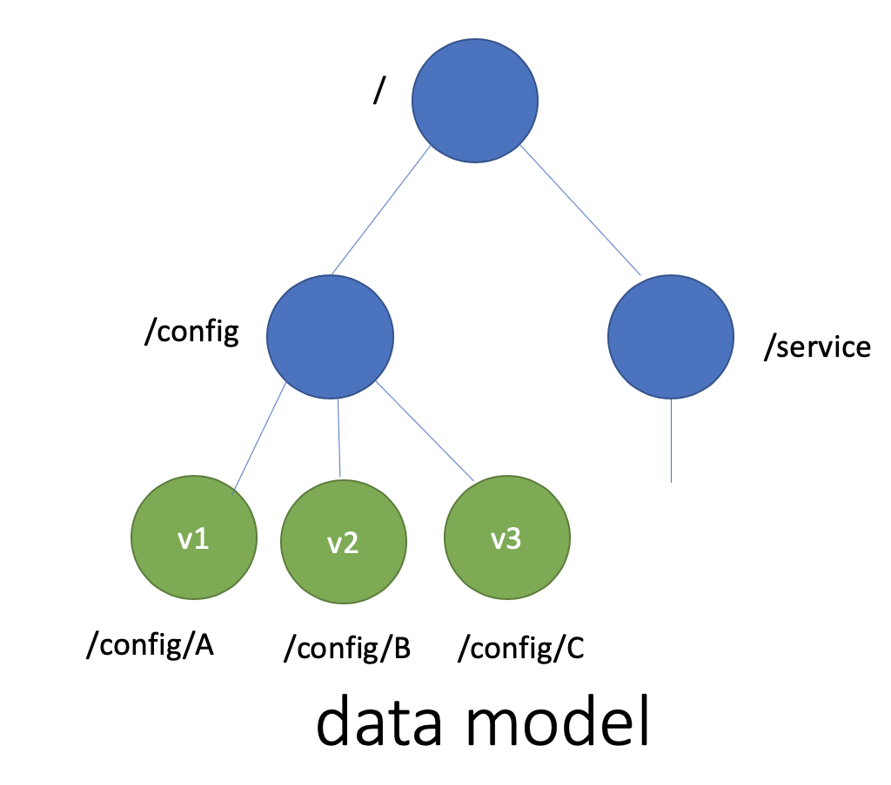
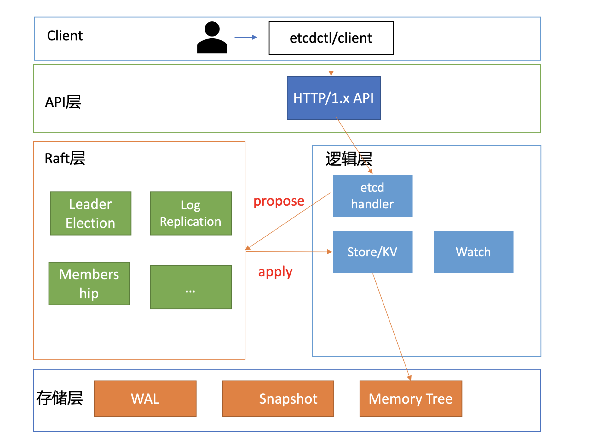
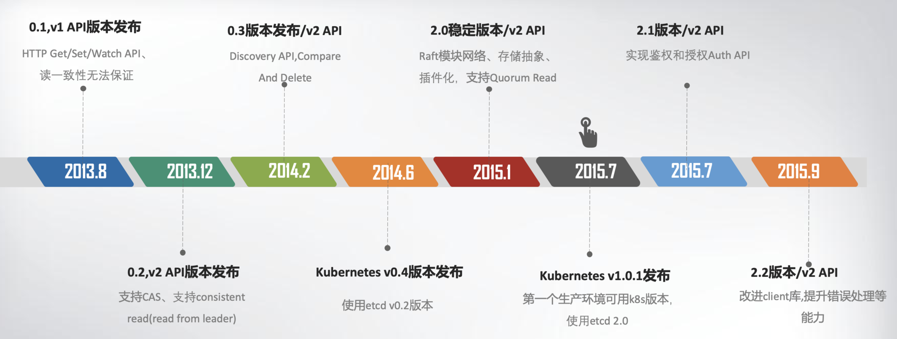
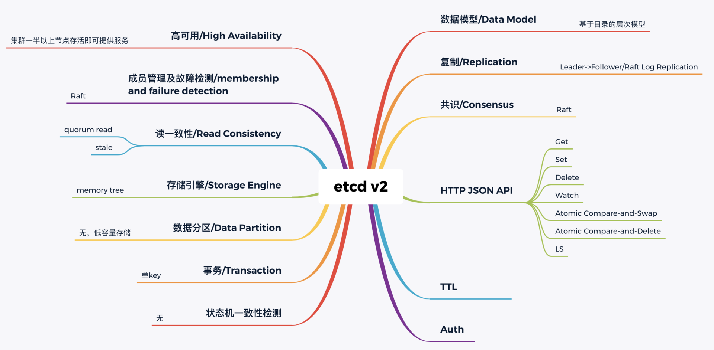
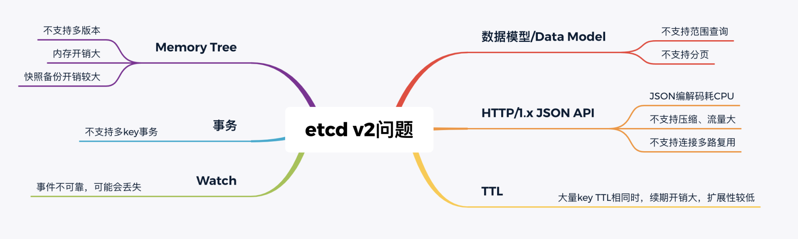
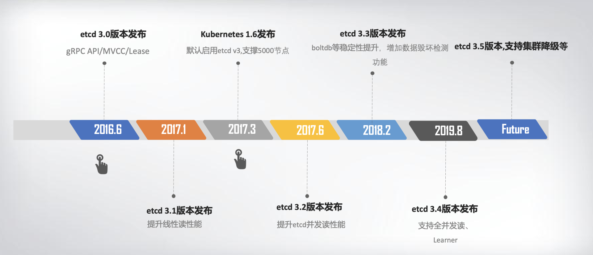

etcd 起源
etcd v1和v2诞生
单副本存在单点故障，而多副本又引入数据一致性问题。为了解决数据一致性问题，需要引入一个共识算法，确保各节点数据一致性，并可容忍一定节点故障。常见的共识算法有Paxos、ZAB、Raft等。CoreOS团队选择了易理解实现的Raft算法，它将复杂的一致性问题分解成Leader选举、日志同步、安全性三个相对独立的子问题，只要集群一半以上节点存活就可提供服务，具备良好的可用性。
其次我们再来看数据模型（Data Model）和API。数据模型参考了ZooKeeper，使用的是基于目录的层次模式。API相比ZooKeeper来说，使用了简单、易用的REST API，提供了常用的Get/Set/Delete/Watch等API，实现对key-value数据的查询、更新、删除、监听等操作。
key-value存储引擎上，ZooKeeper使用的是Concurrent HashMap，而etcd使用的是则是简单内存树，它的节点数据结构精简后如下，含节点路径、值、孩子节点信息。这是一个典型的低容量设计，数据全放在内存，无需考虑数据分片，只能保存key的最新版本，简单易实现。

type node struct {
Path string //节点路径
Parent *node //关联父亲节点
Value string //key的value值
ExpireTime time.Time //过期时间
Children map[string]*node //此节点的孩子节点
}
最后我们再来看可维护性。Raft算法提供了成员变更算法，可基于此实现成员在线、安全变更，同时此协调服务使用Go语言编写，无依赖，部署简单。

基于以上技术方案和架构图，CoreOS团队在2013年8月对外发布了第一个测试版本v0.1，API v1版本，命名为etcd。
那么etcd这个名字是怎么来的呢？其实它源于两个方面，unix的“/etc”文件夹和分布式系统(“D”istribute system)的D，组合在一起表示etcd是用于存储分布式配置的信息存储服务。
v0.1版本实现了简单的HTTP Get/Set/Delete/Watch API，但读数据一致性无法保证。v0.2版本，支持通过指定consistent模式，从Leader读取数据，并将Test And Set机制修正为CAS(Compare And Swap)，解决原子更新的问题，同时发布了新的API版本v2，这就是大家熟悉的etcd v2版本，第一个非stable版本。

为什么Kubernetes使用etcd?
这张图里，我特别标注出了Kubernetes的发布时间点，这个非常关键。我们必须先来说说这个事儿，也就是Kubernetes和etcd的故事。
2014年6月，Google的Kubernetes项目诞生了，我们前面所讨论到Go语言编写、etcd高可用、Watch机制、CAS、TTL等特性正是Kubernetes所需要的，它早期的0.4版本，使用的正是etcd v0.2版本。
Kubernetes是如何使用etcd v2这些特性的呢？举几个简单小例子。
当你使用Kubernetes声明式API部署服务的时候，Kubernetes的控制器通过etcd Watch机制，会实时监听资源变化事件，对比实际状态与期望状态是否一致，并采取协调动作使其一致。Kubernetes更新数据的时候，通过CAS机制保证并发场景下的原子更新，并通过对key设置TTL来存储Event事件，提升Kubernetes集群的可观测性，基于TTL特性，Event事件key到期后可自动删除。
Kubernetes项目使用etcd，除了技术因素也与当时的商业竞争有关。CoreOS是Kubernetes容器生态圈的核心成员之一。
当时Docker容器浪潮正席卷整个开源技术社区，CoreOS也将容器集成到自家产品中。一开始与Docker公司还是合作伙伴，然而Docker公司不断强化Docker的PaaS平台能力，强势控制Docker社区，这与CoreOS核心商业战略出现了冲突，也损害了Google、RedHat等厂商的利益。
最终CoreOS与Docker分道扬镳，并推出了rkt项目来对抗Docker，然而此时Docker已深入人心，CoreOS被Docker全面压制。
以Google、RedHat为首的阵营，基于Google多年的大规模容器管理系统Borg经验，结合社区的建议和实践，构建以Kubernetes为核心的容器生态圈。相比Docker的垄断、独裁，Kubernetes社区推行的是民主、开放原则，Kubernetes每一层都可以通过插件化扩展，在Google、RedHat的带领下不断发展壮大，etcd也进入了快速发展期。
在2015年1月，CoreOS发布了etcd第一个稳定版本2.0，支持了quorum read，提供了严格的线性一致性读能力。7月，基于etcd 2.0的Kubernetes第一个生产环境可用版本v1.0.1发布了，Kubernetes开始了新的里程碑的发展。

etcd v3
随着Kubernetes项目不断发展，v2版本的瓶颈和缺陷逐渐暴露，遇到了若干性能和稳定性问题，Kubernetes社区呼吁支持新的存储、批评etcd不可靠的声音开始不断出现。

首先是 功能局限性问题。 它主要是指etcd v2不支持范围和分页查询、不支持多key事务。
第一，etcd v2不支持范围查询和分页。分页对于数据较多的场景是必不可少的。在Kubernetes中，在集群规模增大后，Pod、Event等资源可能会出现数千个以上，但是etcd v2不支持分页，不支持范围查询，大包等expensive request会导致严重的性能乃至雪崩问题。
第二，etcd v2不支持多key事务。在实际转账等业务场景中，往往我们需要在一个事务中同时更新多个key。
然后是Watch机制可靠性问题。Kubernetes项目严重依赖etcd Watch机制，然而etcd v2是内存型、不支持保存key历史版本的数据库，只在内存中使用滑动窗口保存了最近的1000条变更事件，当etcd server写请求较多、网络波动时等场景，很容易出现事件丢失问题，进而又触发client数据全量拉取，产生大量expensive request，甚至导致etcd雪崩。
其次是性能瓶颈问题。etcd v2早期使用了简单、易调试的HTTP/1.x API，但是随着Kubernetes支撑的集群规模越来越大，HTTP/1.x协议的瓶颈逐渐暴露出来。比如集群规模大时，由于HTTP/1.x协议没有压缩机制，批量拉取较多Pod时容易导致APIServer和etcd出现CPU高负载、OOM、丢包等问题。
另一方面，etcd v2 client会通过HTTP长连接轮询Watch事件，当watcher较多的时候，因HTTP/1.x不支持多路复用，会创建大量的连接，消耗server端过多的socket和内存资源。
同时etcd v2支持为每个key设置TTL过期时间，client为了防止key的TTL过期后被删除，需要周期性刷新key的TTL。
实际业务中很有可能若干key拥有相同的TTL，可是在etcd v2中，即使大量key TTL一样，你也需要分别为每个key发起续期操作，当key较多的时候，这会显著增加集群负载、导致集群性能显著下降。
最后是 内存开销问题。 etcd v2在内存维护了一颗树来保存所有节点key及value。在数据量场景略大的场景，如配置项较多、存储了大量Kubernetes Events， 它会导致较大的内存开销，同时etcd需要定时把全量内存树持久化到磁盘。这会消耗大量的CPU和磁盘 I/O资源，对系统的稳定性造成一定影响。
为什么etcd v2有以上若干问题，Consul等其他竞品依然没有被Kubernetes支持呢？
一方面当时包括Consul在内，没有一个开源项目是十全十美完全满足Kubernetes需求。而CoreOS团队一直在聆听社区的声音并积极改进，解决社区的痛点。用户吐槽etcd不稳定，他们就设计实现自动化的测试方案，模拟、注入各类故障场景，及时发现修复Bug，以提升etcd稳定性。
另一方面，用户吐槽性能问题，针对etcd v2各种先天性缺陷问题，他们从2015年就开始设计、实现新一代etcd v3方案去解决以上痛点，并积极参与Kubernetes项目，负责etcd v2到v3的存储引擎切换，推动Kubernetes项目的前进。同时，设计开发通用压测工具、输出Consul、ZooKeeper、etcd性能测试报告，证明etcd的优越性。
etcd v3就是为了解决以上稳定性、扩展性、性能问题而诞生的。
在内存开销、Watch事件可靠性、功能局限上，它通过引入B-tree、boltdb实现一个MVCC数据库，数据模型从层次型目录结构改成扁平的key-value，提供稳定可靠的事件通知，实现了事务，支持多key原子更新，同时基于boltdb的持久化存储，显著降低了etcd的内存占用、避免了etcd v2定期生成快照时的昂贵的资源开销。
性能上，首先etcd v3使用了gRPC API，使用protobuf定义消息，消息编解码性能相比JSON超过2倍以上，并通过HTTP/2.0多路复用机制，减少了大量watcher等场景下的连接数。
其次使用Lease优化TTL机制，每个Lease具有一个TTL，相同的TTL的key关联一个Lease，Lease过期的时候自动删除相关联的所有key，不再需要为每个key单独续期。
最后是etcd v3支持范围、分页查询，可避免大包等expensive request。
2016年6月，etcd 3.0诞生，随后Kubernetes 1.6发布，默认启用etcd v3，助力Kubernetes支撑5000节点集群规模。
下面的时间轴图，总结了etcd3重要特性及版本发布时间。从图中你可以看出，从3.0到未来的3.5，更稳、更快是etcd的追求目标。

v3方案的发布，标志着etcd进入了技术成熟期，成为云原生时代的首选元数据存储产品。